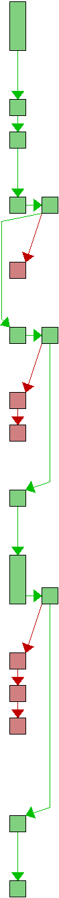
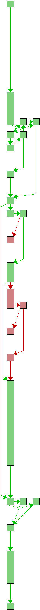
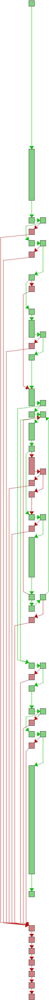
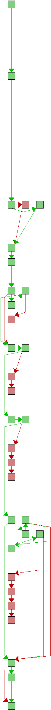
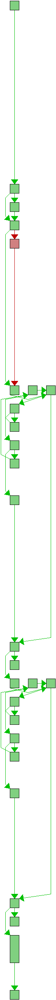
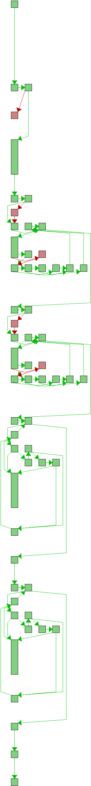
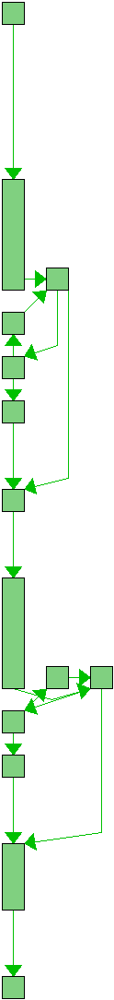
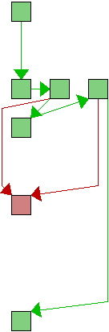

source src/xdiff/xprepare.c
| Line | Flow | Count | Block(s) | Source |
|---|---|---|---|---|
| 1 | - | /* | ||
| 2 | - | * LibXDiff by Davide Libenzi ( File Differential Library ) | ||
| 3 | - | * Copyright (C) 2003 Davide Libenzi | ||
| 4 | - | * | ||
| 5 | - | * This library is free software; you can redistribute it and/or | ||
| 6 | - | * modify it under the terms of the GNU Lesser General Public | ||
| 7 | - | * License as published by the Free Software Foundation; either | ||
| 8 | - | * version 2.1 of the License, or (at your option) any later version. | ||
| 9 | - | * | ||
| 10 | - | * This library is distributed in the hope that it will be useful, | ||
| 11 | - | * but WITHOUT ANY WARRANTY; without even the implied warranty of | ||
| 12 | - | * MERCHANTABILITY or FITNESS FOR A PARTICULAR PURPOSE. See the GNU | ||
| 13 | - | * Lesser General Public License for more details. | ||
| 14 | - | * | ||
| 15 | - | * You should have received a copy of the GNU Lesser General Public | ||
| 16 | - | * License along with this library; if not, see | ||
| 17 | - | * <http://www.gnu.org/licenses/>. | ||
| 18 | - | * | ||
| 19 | - | * Davide Libenzi <davidel@xmailserver.org> | ||
| 20 | - | * | ||
| 21 | - | */ | ||
| 22 | - | |||
| 23 | - | #include "xinclude.h" | ||
| 24 | - | |||
| 25 | - | |||
| 26 | - | #define XDL_KPDIS_RUN 4 | ||
| 27 | - | #define XDL_MAX_EQLIMIT 1024 | ||
| 28 | - | #define XDL_SIMSCAN_WINDOW 100 | ||
| 29 | - | #define XDL_GUESS_NLINES1 256 | ||
| 30 | - | #define XDL_GUESS_NLINES2 20 | ||
| 31 | - | |||
| 32 | - | |||
| 33 | - | typedef struct s_xdlclass { | ||
| 34 | - | struct s_xdlclass *next; | ||
| 35 | - | unsigned long ha; | ||
| 36 | - | char const *line; | ||
| 37 | - | long size; | ||
| 38 | - | long idx; | ||
| 39 | - | long len1, len2; | ||
| 40 | - | } xdlclass_t; | ||
| 41 | - | |||
| 42 | - | typedef struct s_xdlclassifier { | ||
| 43 | - | unsigned int hbits; | ||
| 44 | - | long hsize; | ||
| 45 | - | xdlclass_t **rchash; | ||
| 46 | - | chastore_t ncha; | ||
| 47 | - | xdlclass_t **rcrecs; | ||
| 48 | - | long alloc; | ||
| 49 | - | long count; | ||
| 50 | - | long flags; | ||
| 51 | - | } xdlclassifier_t; | ||
| 52 | - | |||
| 53 | - | |||
| 54 | - | |||
| 55 | - | |||
| 56 | - | static int xdl_init_classifier(xdlclassifier_t *cf, long size, long flags); | ||
| 57 | - | static void xdl_free_classifier(xdlclassifier_t *cf); | ||
| 58 | - | static int xdl_classify_record(unsigned int pass, xdlclassifier_t *cf, xrecord_t **rhash, | ||
| 59 | - | unsigned int hbits, xrecord_t *rec); | ||
| 60 | - | static int xdl_prepare_ctx(unsigned int pass, mmfile_t *mf, long narec, xpparam_t const *xpp, | ||
| 61 | - | xdlclassifier_t *cf, xdfile_t *xdf); | ||
| 62 | - | static void xdl_free_ctx(xdfile_t *xdf); | ||
| 63 | - | static int xdl_clean_mmatch(char const *dis, long i, long s, long e); | ||
| 64 | - | static int xdl_cleanup_records(xdlclassifier_t *cf, xdfile_t *xdf1, xdfile_t *xdf2); | ||
| 65 | - | static int xdl_trim_ends(xdfile_t *xdf1, xdfile_t *xdf2); | ||
| 66 | - | static int xdl_optimize_ctxs(xdlclassifier_t *cf, xdfile_t *xdf1, xdfile_t *xdf2); | ||
| 67 | - | |||
| 68 | - | |||
| 69 | - | |||
| 70 | - | |||
| 71 |  | 2123 | 2 | static int xdl_init_classifier(xdlclassifier_t *cf, long size, long flags) { |
| 72 | 2123 | 2 | cf->flags = flags; | |
| 73 | - | |||
| 74 | 2123 | 2 | cf->hbits = xdl_hashbits((unsigned int) size); | |
| 75 | 2123 | 3 | cf->hsize = 1 << cf->hbits; | |
| 76 | - | |||
| 77 | 2123 | 3,4 | if (xdl_cha_init(&cf->ncha, sizeof(xdlclass_t), size / 4 + 1) < 0) { | |
| 78 | - | |||
| 79 | ##### | 5 | return -1; | |
| 80 | - | } | ||
| 81 | 2123 | 6,7 | if (!(cf->rchash = (xdlclass_t **) xdl_malloc(cf->hsize * sizeof(xdlclass_t *)))) { | |
| 82 | - | |||
| 83 | ##### | 8 | xdl_cha_free(&cf->ncha); | |
| 84 | ##### | 9 | return -1; | |
| 85 | - | } | ||
| 86 | 2123 | 10 | memset(cf->rchash, 0, cf->hsize * sizeof(xdlclass_t *)); | |
| 87 | - | |||
| 88 | 2123 | 10 | cf->alloc = size; | |
| 89 | 2123 | 10,11 | if (!(cf->rcrecs = (xdlclass_t **) xdl_malloc(cf->alloc * sizeof(xdlclass_t *)))) { | |
| 90 | - | |||
| 91 | ##### | 12 | xdl_free(cf->rchash); | |
| 92 | ##### | 13 | xdl_cha_free(&cf->ncha); | |
| 93 | ##### | 14 | return -1; | |
| 94 | - | } | ||
| 95 | - | |||
| 96 | 2123 | 15 | cf->count = 0; | |
| 97 | - | |||
| 98 | 2123 | 15 | return 0; | |
| 99 | - | } | ||
| 100 | - | |||
| 101 | - | |||
| 102 | 2123 | 2 | static void xdl_free_classifier(xdlclassifier_t *cf) { | |
| 103 | - | |||
| 104 | 2123 | 2 | xdl_free(cf->rcrecs); | |
| 105 | 2123 | 3 | xdl_free(cf->rchash); | |
| 106 | 2123 | 4 | xdl_cha_free(&cf->ncha); | |
| 107 | 2123 | 5 | } | |
| 108 | - | |||
| 109 | - | |||
| 110 |  | 172286 | 2 | static int xdl_classify_record(unsigned int pass, xdlclassifier_t *cf, xrecord_t **rhash, |
| 111 | - | unsigned int hbits, xrecord_t *rec) { | ||
| 112 | - | long hi; | ||
| 113 | - | char const *line; | ||
| 114 | - | xdlclass_t *rcrec; | ||
| 115 | - | xdlclass_t **rcrecs; | ||
| 116 | - | |||
| 117 | 172286 | 2 | line = rec->ptr; | |
| 118 | 172286 | 2 | hi = (long) XDL_HASHLONG(rec->ha, cf->hbits); | |
| 119 | 177476 | 2,7,8 | for (rcrec = cf->rchash[hi]; rcrec; rcrec = rcrec->next) | |
| 120 | 159548 | 3,5 | if (rcrec->ha == rec->ha && | |
| 121 | 154395 | 4 | xdl_recmatch(rcrec->line, rcrec->size, | |
| 122 | - | rec->ptr, rec->size, cf->flags)) | ||
| 123 | 154358 | 6 | break; | |
| 124 | - | |||
| 125 | 172286 | 9 | if (!rcrec) { | |
| 126 | 17928 | 10,11 | if (!(rcrec = xdl_cha_alloc(&cf->ncha))) { | |
| 127 | - | |||
| 128 | ##### | 12 | return -1; | |
| 129 | - | } | ||
| 130 | 17928 | 13 | rcrec->idx = cf->count++; | |
| 131 | 17928 | 13 | if (cf->count > cf->alloc) { | |
| 132 | ##### | 14 | cf->alloc *= 2; | |
| 133 | ##### | 14,15 | if (!(rcrecs = (xdlclass_t **) xdl_realloc(cf->rcrecs, cf->alloc * sizeof(xdlclass_t *)))) { | |
| 134 | - | |||
| 135 | ##### | 16 | return -1; | |
| 136 | - | } | ||
| 137 | ##### | 17 | cf->rcrecs = rcrecs; | |
| 138 | - | } | ||
| 139 | 17928 | 18 | cf->rcrecs[rcrec->idx] = rcrec; | |
| 140 | 17928 | 18 | rcrec->line = line; | |
| 141 | 17928 | 18 | rcrec->size = rec->size; | |
| 142 | 17928 | 18 | rcrec->ha = rec->ha; | |
| 143 | 17928 | 18 | rcrec->len1 = rcrec->len2 = 0; | |
| 144 | 17928 | 18 | rcrec->next = cf->rchash[hi]; | |
| 145 | 17928 | 18 | cf->rchash[hi] = rcrec; | |
| 146 | - | } | ||
| 147 | - | |||
| 148 | 172286 | 19-21 | (pass == 1) ? rcrec->len1++ : rcrec->len2++; | |
| 149 | - | |||
| 150 | 172286 | 22 | rec->ha = (unsigned long) rcrec->idx; | |
| 151 | - | |||
| 152 | 172286 | 22 | hi = (long) XDL_HASHLONG(rec->ha, hbits); | |
| 153 | 172286 | 22 | rec->next = rhash[hi]; | |
| 154 | 172286 | 22 | rhash[hi] = rec; | |
| 155 | - | |||
| 156 | 172286 | 22 | return 0; | |
| 157 | - | } | ||
| 158 | - | |||
| 159 | - | |||
| 160 |  | 4246 | 2 | static int xdl_prepare_ctx(unsigned int pass, mmfile_t *mf, long narec, xpparam_t const *xpp, |
| 161 | - | xdlclassifier_t *cf, xdfile_t *xdf) { | ||
| 162 | - | unsigned int hbits; | ||
| 163 | - | long nrec, hsize, bsize; | ||
| 164 | - | unsigned long hav; | ||
| 165 | - | char const *blk, *cur, *top, *prev; | ||
| 166 | - | xrecord_t *crec; | ||
| 167 | - | xrecord_t **recs, **rrecs; | ||
| 168 | - | xrecord_t **rhash; | ||
| 169 | - | unsigned long *ha; | ||
| 170 | - | char *rchg; | ||
| 171 | - | long *rindex; | ||
| 172 | - | |||
| 173 | 4246 | 2 | ha = NULL; | |
| 174 | 4246 | 2 | rindex = NULL; | |
| 175 | 4246 | 2 | rchg = NULL; | |
| 176 | 4246 | 2 | rhash = NULL; | |
| 177 | 4246 | 2 | recs = NULL; | |
| 178 | - | |||
| 179 | 4246 | 2,3 | if (xdl_cha_init(&xdf->rcha, sizeof(xrecord_t), narec / 4 + 1) < 0) | |
| 180 | ##### | 4 | goto abort; | |
| 181 | 4246 | 5,6 | if (!(recs = (xrecord_t **) xdl_malloc(narec * sizeof(xrecord_t *)))) | |
| 182 | ##### | 7 | goto abort; | |
| 183 | - | |||
| 184 | 4246 | 8 | if (XDF_DIFF_ALG(xpp->flags) == XDF_HISTOGRAM_DIFF) | |
| 185 | ##### | 9 | hbits = hsize = 0; | |
| 186 | - | else { | ||
| 187 | 4246 | 10 | hbits = xdl_hashbits((unsigned int) narec); | |
| 188 | 4246 | 11 | hsize = 1 << hbits; | |
| 189 | 4246 | 11,12 | if (!(rhash = (xrecord_t **) xdl_malloc(hsize * sizeof(xrecord_t *)))) | |
| 190 | ##### | 13 | goto abort; | |
| 191 | 4246 | 14 | memset(rhash, 0, hsize * sizeof(xrecord_t *)); | |
| 192 | - | } | ||
| 193 | - | |||
| 194 | 4246 | 15 | nrec = 0; | |
| 195 | 4246 | 15,16 | if ((cur = blk = xdl_mmfile_first(mf, &bsize)) != NULL) { | |
| 196 | 176471 | 17,31 | for (top = blk + bsize; cur < top; ) { | |
| 197 | 172286 | 18 | prev = cur; | |
| 198 | 172286 | 18 | hav = xdl_hash_record(&cur, top, xpp->flags); | |
| 199 | 172286 | 19 | if (nrec >= narec) { | |
| 200 | ##### | 20 | narec *= 2; | |
| 201 | ##### | 20,21 | if (!(rrecs = (xrecord_t **) xdl_realloc(recs, narec * sizeof(xrecord_t *)))) | |
| 202 | ##### | 22 | goto abort; | |
| 203 | ##### | 23 | recs = rrecs; | |
| 204 | - | } | ||
| 205 | 172286 | 24,25 | if (!(crec = xdl_cha_alloc(&xdf->rcha))) | |
| 206 | ##### | 26 | goto abort; | |
| 207 | 172286 | 27 | crec->ptr = prev; | |
| 208 | 172286 | 27 | crec->size = (long) (cur - prev); | |
| 209 | 172286 | 27 | crec->ha = hav; | |
| 210 | 172286 | 27 | recs[nrec++] = crec; | |
| 211 | - | |||
| 212 | 172286 | 27,29 | if ((XDF_DIFF_ALG(xpp->flags) != XDF_HISTOGRAM_DIFF) && | |
| 213 | 172286 | 28 | xdl_classify_record(pass, cf, rhash, hbits, crec) < 0) | |
| 214 | ##### | 30 | goto abort; | |
| 215 | - | } | ||
| 216 | - | } | ||
| 217 | - | |||
| 218 | 4246 | 32,33 | if (!(rchg = (char *) xdl_malloc((nrec + 2) * sizeof(char)))) | |
| 219 | ##### | 34 | goto abort; | |
| 220 | 4246 | 35 | memset(rchg, 0, (nrec + 2) * sizeof(char)); | |
| 221 | - | |||
| 222 | 4246 | 35,36 | if (!(rindex = (long *) xdl_malloc((nrec + 1) * sizeof(long)))) | |
| 223 | ##### | 37 | goto abort; | |
| 224 | 4246 | 38,39 | if (!(ha = (unsigned long *) xdl_malloc((nrec + 1) * sizeof(unsigned long)))) | |
| 225 | ##### | 40 | goto abort; | |
| 226 | - | |||
| 227 | 4246 | 41 | xdf->nrec = nrec; | |
| 228 | 4246 | 41 | xdf->recs = recs; | |
| 229 | 4246 | 41 | xdf->hbits = hbits; | |
| 230 | 4246 | 41 | xdf->rhash = rhash; | |
| 231 | 4246 | 41 | xdf->rchg = rchg + 1; | |
| 232 | 4246 | 41 | xdf->rindex = rindex; | |
| 233 | 4246 | 41 | xdf->nreff = 0; | |
| 234 | 4246 | 41 | xdf->ha = ha; | |
| 235 | 4246 | 41 | xdf->dstart = 0; | |
| 236 | 4246 | 41 | xdf->dend = nrec - 1; | |
| 237 | - | |||
| 238 | 4246 | 41 | return 0; | |
| 239 | - | |||
| 240 | - | abort: | ||
| 241 | ##### | 42 | xdl_free(ha); | |
| 242 | ##### | 43 | xdl_free(rindex); | |
| 243 | ##### | 44 | xdl_free(rchg); | |
| 244 | ##### | 45 | xdl_free(rhash); | |
| 245 | ##### | 46 | xdl_free(recs); | |
| 246 | ##### | 47 | xdl_cha_free(&xdf->rcha); | |
| 247 | ##### | 48 | return -1; | |
| 248 | - | } | ||
| 249 | - | |||
| 250 | - | |||
| 251 | 4246 | 2 | static void xdl_free_ctx(xdfile_t *xdf) { | |
| 252 | - | |||
| 253 | 4246 | 2 | xdl_free(xdf->rhash); | |
| 254 | 4246 | 3 | xdl_free(xdf->rindex); | |
| 255 | 4246 | 4 | xdl_free(xdf->rchg - 1); | |
| 256 | 4246 | 5 | xdl_free(xdf->ha); | |
| 257 | 4246 | 6 | xdl_free(xdf->recs); | |
| 258 | 4246 | 7 | xdl_cha_free(&xdf->rcha); | |
| 259 | 4246 | 8 | } | |
| 260 | - | |||
| 261 | - | |||
| 262 |  | 2123 | 2 | int xdl_prepare_env(mmfile_t *mf1, mmfile_t *mf2, xpparam_t const *xpp, |
| 263 | - | xdfenv_t *xe) { | ||
| 264 | - | long enl1, enl2, sample; | ||
| 265 | - | xdlclassifier_t cf; | ||
| 266 | - | |||
| 267 | 2123 | 2 | memset(&cf, 0, sizeof(cf)); | |
| 268 | - | |||
| 269 | - | /* | ||
| 270 | - | * For histogram diff, we can afford a smaller sample size and | ||
| 271 | - | * thus a poorer estimate of the number of lines, as the hash | ||
| 272 | - | * table (rhash) won't be filled up/grown. The number of lines | ||
| 273 | - | * (nrecs) will be updated correctly anyway by | ||
| 274 | - | * xdl_prepare_ctx(). | ||
| 275 | - | */ | ||
| 276 | 2123 | 2-4 | sample = (XDF_DIFF_ALG(xpp->flags) == XDF_HISTOGRAM_DIFF | |
| 277 | - | ? XDL_GUESS_NLINES2 : XDL_GUESS_NLINES1); | ||
| 278 | - | |||
| 279 | 2123 | 5 | enl1 = xdl_guess_lines(mf1, sample) + 1; | |
| 280 | 2123 | 6 | enl2 = xdl_guess_lines(mf2, sample) + 1; | |
| 281 | - | |||
| 282 | 2123 | 7,9 | if (XDF_DIFF_ALG(xpp->flags) != XDF_HISTOGRAM_DIFF && | |
| 283 | 2123 | 8 | xdl_init_classifier(&cf, enl1 + enl2 + 1, xpp->flags) < 0) | |
| 284 | ##### | 10 | return -1; | |
| 285 | - | |||
| 286 | 2123 | 11,12 | if (xdl_prepare_ctx(1, mf1, enl1, xpp, &cf, &xe->xdf1) < 0) { | |
| 287 | - | |||
| 288 | ##### | 13 | xdl_free_classifier(&cf); | |
| 289 | ##### | 14 | return -1; | |
| 290 | - | } | ||
| 291 | 2123 | 15,16 | if (xdl_prepare_ctx(2, mf2, enl2, xpp, &cf, &xe->xdf2) < 0) { | |
| 292 | - | |||
| 293 | ##### | 17 | xdl_free_ctx(&xe->xdf1); | |
| 294 | ##### | 18 | xdl_free_classifier(&cf); | |
| 295 | ##### | 19 | return -1; | |
| 296 | - | } | ||
| 297 | - | |||
| 298 | 2123 | 20,21 | if ((XDF_DIFF_ALG(xpp->flags) != XDF_PATIENCE_DIFF) && | |
| 299 | 2122 | 21,23 | (XDF_DIFF_ALG(xpp->flags) != XDF_HISTOGRAM_DIFF) && | |
| 300 | 2122 | 22 | xdl_optimize_ctxs(&cf, &xe->xdf1, &xe->xdf2) < 0) { | |
| 301 | - | |||
| 302 | ##### | 24 | xdl_free_ctx(&xe->xdf2); | |
| 303 | ##### | 25 | xdl_free_ctx(&xe->xdf1); | |
| 304 | ##### | 26 | xdl_free_classifier(&cf); | |
| 305 | ##### | 27 | return -1; | |
| 306 | - | } | ||
| 307 | - | |||
| 308 | 2123 | 28 | if (XDF_DIFF_ALG(xpp->flags) != XDF_HISTOGRAM_DIFF) | |
| 309 | 2123 | 29 | xdl_free_classifier(&cf); | |
| 310 | - | |||
| 311 | 2123 | 30 | return 0; | |
| 312 | - | } | ||
| 313 | - | |||
| 314 | - | |||
| 315 | 2123 | 2 | void xdl_free_env(xdfenv_t *xe) { | |
| 316 | - | |||
| 317 | 2123 | 2 | xdl_free_ctx(&xe->xdf2); | |
| 318 | 2123 | 3 | xdl_free_ctx(&xe->xdf1); | |
| 319 | 2123 | 4 | } | |
| 320 | - | |||
| 321 | - | |||
| 322 |  | 1806 | 2 | static int xdl_clean_mmatch(char const *dis, long i, long s, long e) { |
| 323 | - | long r, rdis0, rpdis0, rdis1, rpdis1; | ||
| 324 | - | |||
| 325 | - | /* | ||
| 326 | - | * Limits the window the is examined during the similar-lines | ||
| 327 | - | * scan. The loops below stops when dis[i - r] == 1 (line that | ||
| 328 | - | * has no match), but there are corner cases where the loop | ||
| 329 | - | * proceed all the way to the extremities by causing huge | ||
| 330 | - | * performance penalties in case of big files. | ||
| 331 | - | */ | ||
| 332 | 1806 | 2 | if (i - s > XDL_SIMSCAN_WINDOW) | |
| 333 | 2 | 3 | s = i - XDL_SIMSCAN_WINDOW; | |
| 334 | 1806 | 4 | if (e - i > XDL_SIMSCAN_WINDOW) | |
| 335 | ##### | 5 | e = i + XDL_SIMSCAN_WINDOW; | |
| 336 | - | |||
| 337 | - | /* | ||
| 338 | - | * Scans the lines before 'i' to find a run of lines that either | ||
| 339 | - | * have no match (dis[j] == 0) or have multiple matches (dis[j] > 1). | ||
| 340 | - | * Note that we always call this function with dis[i] > 1, so the | ||
| 341 | - | * current line (i) is already a multimatch line. | ||
| 342 | - | */ | ||
| 343 | 8179 | 6,12,13 | for (r = 1, rdis0 = 0, rpdis0 = 1; (i - r) >= s; r++) { | |
| 344 | 6910 | 7 | if (!dis[i - r]) | |
| 345 | 1289 | 8 | rdis0++; | |
| 346 | 5621 | 9 | else if (dis[i - r] == 2) | |
| 347 | 5084 | 10 | rpdis0++; | |
| 348 | - | else | ||
| 349 | 537 | 11 | break; | |
| 350 | - | } | ||
| 351 | - | /* | ||
| 352 | - | * If the run before the line 'i' found only multimatch lines, we | ||
| 353 | - | * return 0 and hence we don't make the current line (i) discarded. | ||
| 354 | - | * We want to discard multimatch lines only when they appear in the | ||
| 355 | - | * middle of runs with nomatch lines (dis[j] == 0). | ||
| 356 | - | */ | ||
| 357 | 1806 | 14 | if (rdis0 == 0) | |
| 358 | 1290 | 15 | return 0; | |
| 359 | 3931 | 16,22,23 | for (r = 1, rdis1 = 0, rpdis1 = 1; (i + r) <= e; r++) { | |
| 360 | 3465 | 17 | if (!dis[i + r]) | |
| 361 | 1374 | 18 | rdis1++; | |
| 362 | 2091 | 19 | else if (dis[i + r] == 2) | |
| 363 | 2041 | 20 | rpdis1++; | |
| 364 | - | else | ||
| 365 | 50 | 21 | break; | |
| 366 | - | } | ||
| 367 | - | /* | ||
| 368 | - | * If the run after the line 'i' found only multimatch lines, we | ||
| 369 | - | * return 0 and hence we don't make the current line (i) discarded. | ||
| 370 | - | */ | ||
| 371 | 516 | 24 | if (rdis1 == 0) | |
| 372 | 109 | 25 | return 0; | |
| 373 | 407 | 26 | rdis1 += rdis0; | |
| 374 | 407 | 26 | rpdis1 += rpdis0; | |
| 375 | - | |||
| 376 | 407 | 26 | return rpdis1 * XDL_KPDIS_RUN < (rpdis1 + rdis1); | |
| 377 | - | } | ||
| 378 | - | |||
| 379 | - | |||
| 380 | - | /* | ||
| 381 | - | * Try to reduce the problem complexity, discard records that have no | ||
| 382 | - | * matches on the other file. Also, lines that have multiple matches | ||
| 383 | - | * might be potentially discarded if they happear in a run of discardable. | ||
| 384 | - | */ | ||
| 385 |  | 2122 | 2 | static int xdl_cleanup_records(xdlclassifier_t *cf, xdfile_t *xdf1, xdfile_t *xdf2) { |
| 386 | - | long i, nm, nreff, mlim; | ||
| 387 | - | xrecord_t **recs; | ||
| 388 | - | xdlclass_t *rcrec; | ||
| 389 | - | char *dis, *dis1, *dis2; | ||
| 390 | - | |||
| 391 | 2122 | 2,3 | if (!(dis = (char *) xdl_malloc(xdf1->nrec + xdf2->nrec + 2))) { | |
| 392 | - | |||
| 393 | ##### | 4 | return -1; | |
| 394 | - | } | ||
| 395 | 2122 | 5 | memset(dis, 0, xdf1->nrec + xdf2->nrec + 2); | |
| 396 | 2122 | 5 | dis1 = dis; | |
| 397 | 2122 | 5 | dis2 = dis1 + xdf1->nrec + 1; | |
| 398 | - | |||
| 399 | 2122 | 5,6 | if ((mlim = xdl_bogosqrt(xdf1->nrec)) > XDL_MAX_EQLIMIT) | |
| 400 | ##### | 7 | mlim = XDL_MAX_EQLIMIT; | |
| 401 | 9950 | 8,18,19 | for (i = xdf1->dstart, recs = &xdf1->recs[xdf1->dstart]; i <= xdf1->dend; i++, recs++) { | |
| 402 | 7828 | 9 | rcrec = cf->rcrecs[(*recs)->ha]; | |
| 403 | 7828 | 9-11 | nm = rcrec ? rcrec->len2 : 0; | |
| 404 | 7828 | 12-17 | dis1[i] = (nm == 0) ? 0: (nm >= mlim) ? 2: 1; | |
| 405 | - | } | ||
| 406 | - | |||
| 407 | 2122 | 20,21 | if ((mlim = xdl_bogosqrt(xdf2->nrec)) > XDL_MAX_EQLIMIT) | |
| 408 | ##### | 22 | mlim = XDL_MAX_EQLIMIT; | |
| 409 | 10799 | 23,33,34 | for (i = xdf2->dstart, recs = &xdf2->recs[xdf2->dstart]; i <= xdf2->dend; i++, recs++) { | |
| 410 | 8677 | 24 | rcrec = cf->rcrecs[(*recs)->ha]; | |
| 411 | 8677 | 24-26 | nm = rcrec ? rcrec->len1 : 0; | |
| 412 | 8677 | 27-32 | dis2[i] = (nm == 0) ? 0: (nm >= mlim) ? 2: 1; | |
| 413 | - | } | ||
| 414 | - | |||
| 415 | 9950 | 35,43 | for (nreff = 0, i = xdf1->dstart, recs = &xdf1->recs[xdf1->dstart]; | |
| 416 | 7828 | 42 | i <= xdf1->dend; i++, recs++) { | |
| 417 | 7828 | 36,37 | if (dis1[i] == 1 || | |
| 418 | 5687 | 37-39 | (dis1[i] == 2 && !xdl_clean_mmatch(dis1, i, xdf1->dstart, xdf1->dend))) { | |
| 419 | 3129 | 40 | xdf1->rindex[nreff] = i; | |
| 420 | 3129 | 40 | xdf1->ha[nreff] = (*recs)->ha; | |
| 421 | 3129 | 40 | nreff++; | |
| 422 | - | } else | ||
| 423 | 4699 | 41 | xdf1->rchg[i] = 1; | |
| 424 | - | } | ||
| 425 | 2122 | 44 | xdf1->nreff = nreff; | |
| 426 | - | |||
| 427 | 10799 | 44,52 | for (nreff = 0, i = xdf2->dstart, recs = &xdf2->recs[xdf2->dstart]; | |
| 428 | 8677 | 51 | i <= xdf2->dend; i++, recs++) { | |
| 429 | 8677 | 45,46 | if (dis2[i] == 1 || | |
| 430 | 6391 | 46-48 | (dis2[i] == 2 && !xdl_clean_mmatch(dis2, i, xdf2->dstart, xdf2->dend))) { | |
| 431 | 3067 | 49 | xdf2->rindex[nreff] = i; | |
| 432 | 3067 | 49 | xdf2->ha[nreff] = (*recs)->ha; | |
| 433 | 3067 | 49 | nreff++; | |
| 434 | - | } else | ||
| 435 | 5610 | 50 | xdf2->rchg[i] = 1; | |
| 436 | - | } | ||
| 437 | 2122 | 53 | xdf2->nreff = nreff; | |
| 438 | - | |||
| 439 | 2122 | 53 | xdl_free(dis); | |
| 440 | - | |||
| 441 | 2122 | 54 | return 0; | |
| 442 | - | } | ||
| 443 | - | |||
| 444 | - | |||
| 445 | - | /* | ||
| 446 | - | * Early trim initial and terminal matching records. | ||
| 447 | - | */ | ||
| 448 |  | 2122 | 2 | static int xdl_trim_ends(xdfile_t *xdf1, xdfile_t *xdf2) { |
| 449 | - | long i, lim; | ||
| 450 | - | xrecord_t **recs1, **recs2; | ||
| 451 | - | |||
| 452 | 2122 | 2 | recs1 = xdf1->recs; | |
| 453 | 2122 | 2 | recs2 = xdf2->recs; | |
| 454 | 75707 | 2,6 | for (i = 0, lim = XDL_MIN(xdf1->nrec, xdf2->nrec); i < lim; | |
| 455 | 73585 | 5 | i++, recs1++, recs2++) | |
| 456 | 75000 | 3 | if ((*recs1)->ha != (*recs2)->ha) | |
| 457 | 1415 | 4 | break; | |
| 458 | - | |||
| 459 | 2122 | 7 | xdf1->dstart = xdf2->dstart = i; | |
| 460 | - | |||
| 461 | 2122 | 7 | recs1 = xdf1->recs + xdf1->nrec - 1; | |
| 462 | 2122 | 7 | recs2 = xdf2->recs + xdf2->nrec - 1; | |
| 463 | 6419 | 7,10,11 | for (lim -= i, i = 0; i < lim; i++, recs1--, recs2--) | |
| 464 | 5582 | 8 | if ((*recs1)->ha != (*recs2)->ha) | |
| 465 | 1285 | 9 | break; | |
| 466 | - | |||
| 467 | 2122 | 12 | xdf1->dend = xdf1->nrec - i - 1; | |
| 468 | 2122 | 12 | xdf2->dend = xdf2->nrec - i - 1; | |
| 469 | - | |||
| 470 | 2122 | 12 | return 0; | |
| 471 | - | } | ||
| 472 | - | |||
| 473 | - | |||
| 474 |  | 2122 | 2 | static int xdl_optimize_ctxs(xdlclassifier_t *cf, xdfile_t *xdf1, xdfile_t *xdf2) { |
| 475 | - | |||
| 476 | 2122 | 2,3,5 | if (xdl_trim_ends(xdf1, xdf2) < 0 || | |
| 477 | 2122 | 4 | xdl_cleanup_records(cf, xdf1, xdf2) < 0) { | |
| 478 | - | |||
| 479 | ##### | 6 | return -1; | |
| 480 | - | } | ||
| 481 | - | |||
| 482 | 2122 | 7 | return 0; | |
| 483 | - | } |